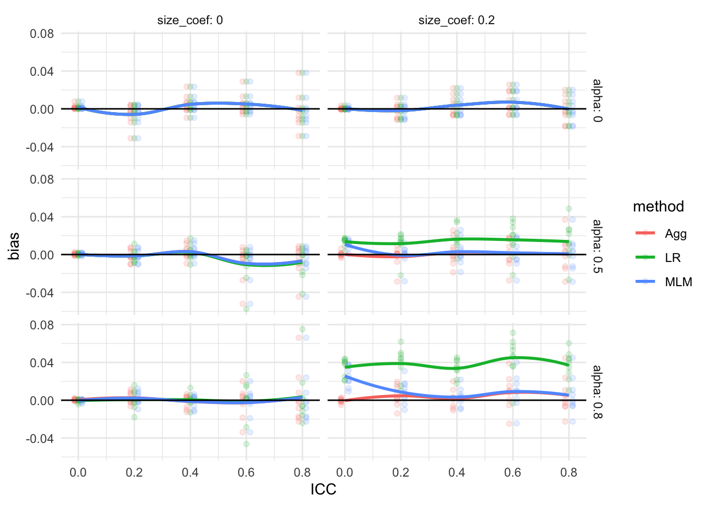

Chapter 5 Data-Generating Processes (DGPs)
The data generating process (DGP) is the recipe we use to create fake data that we then analyze. Often we express our DGP as a specific model, with parameters that we can set to generate data. The advantage of this is, generally, when we generate from a specified model we know the “right answer,” and can thus compare our estimates to this right answer in order to assess whether our estimation procedures worked.
The easiest way to describe a DGP is usually via a mathematical model, which is fundamentally a sequence of equations and random variables that define a series of steps. Describing DGPs in this way is especially important for more complex DGPs, such as those for hierarchical data. These models will often be a series of chained linear equations that use a set of parameters that we set out. Once we have them, we can convert these equations to code by simply following these laid out steps.
In this chapter we will walk through this process using a running example of clustered data. In particular, we are going to focus on generating two-level data of students nested in schools. A good starting point for building a DGP is to first write down a sketch of what the eventual data might look like. In our case, for example, we might have:
# a tiny dataset of 2 schools and 7 students
sim_dat <- tibble( school = c(1, 1, 1, 1, 2, 2, 2),
student = c(1, 2, 3, 4, 1, 2, 3),
X = rnorm( 7 ),
Y = rnorm( 7 ) + X )
knitr::kable( sim_dat, digits=1 )| schoolID | studentID | X | FRL | Y |
|---|---|---|---|---|
| 1 | 1 | 2.7 | yes | 3.6 |
| 1 | 2 | 1.1 | no | 1.6 |
| 1 | 3 | 0.0 | yes | -1.0 |
| 1 | etc | etc | etc | etc |
| 2 | 1 | -0.3 | yes | -0.5 |
| 2 | 2 | 0.5 | no | 1.5 |
| 2 | 3 | -0.7 | yes | -1.2 |
| etc | etc | etc | etc | etc |
There are several ingredients of a full mathematical model that we could use to generate data.
COVARIATES and STRUCTURAL COVARIATES Covariates are the things that we are usually given when analyzing real data. This is a broad definition, including things beside baseline information:
- Conventional: student demographics, school-level characteristics, treatment assignment
- Structural: number of observations in each school, proportion treated in each school
In the real world, we do not tend to think of structural covariates as covariates per se, they are more just consequences of the data. We rarely model them, but instead condition on them, in a statistical analysis. In a simulation, however, we will have to decide how they come to be.
MODEL This is the parametric relationship between everything, such as a specification of how the outcomes are linked to the covariates. This includes specification of the randomness (the distribution of the residuals, etc.). The model will usually contain equations that one might see in an analysis of data that looks like what we are trying to generate.
We will also have some extra parts of the model, that define how to generate the structural covariates. For example, we might specify that site sizes are uniform between a specified minimum and maximum size, or that some covariate \(X\) is normally distributed.
DESIGN PARAMETERS These are, e.g., the number of sites and the range of allowed site sizes. These will control how we generate the structural covariates.
PARAMETERS These are the specifics: for a given model, parameters describe how strong a relationship there is between covariate and outcome, variance of the residuals, and so forth. We usually estimate these from data. Critically, if we know them, we can generate new data.
For example, for the Welch data earlier we have, for observation \(i\) in group \(g\), a mathematical representation of our data of:
\[ X_{ig} = \mu_g + \epsilon_{ig} \mbox{ with } \epsilon_{ig} \sim N( 0, \sigma^2_g ) \]
These math equations would also come along with specified parameter values (the \(\mu_g\), the \(\sigma^2_g\)), and the design parameter of the sample sizes.
5.1 A statistical model is a recipe for data generation
The next step is to translate our mathematical model to code. In the real world:
- We obtain data, we pick a model, we estimate parameters
- The data comes with covariates and outcomes
- It also comes with sample size, sizes of the clusters, etc.
In the simulation world, by comparison:
- We pick a model, we decide how much data, we generate covariates, we pick the parameters, and then we generate outcomes
- We need to decide how many clusters, how big the clusters are, etc.
- We have to specify how the covariates are made. This last piece is very different from real-world analysis.
In terms of code, a function that implements a data-generating model should have the following form:
generate_data <- function(parameters) {
# generate pseudo-random numbers and use those to
# make some data
return(sim_data)
}The function takes a set of parameter values as input, simulates random numbers and does calculations, and produces as output a set of simulated data. Again, there will in general be multiple parameters, and these will include not only the model parameters (e.g. the coefficients of a regression), but also sample sizes and other study design parameters. The output will typically be a dataframe, mimicking what data one would see in the “real world,” possibly augmented by some other latent values that we can use later on to assess whether the estimation procedures we are checking are close to the truth.
For example, from our Welch case study, we have the following method that generates grouped data with a single outcome.
generate_data <- function(mu, sigma_sq, sample_size) {
N <- sum(sample_size)
g <- length(sample_size)
group <- rep(1:g, times = sample_size)
mu_long <- rep(mu, times = sample_size)
sigma_long <- rep(sqrt(sigma_sq), times = sample_size)
x <- rnorm(N, mean = mu_long, sd = sigma_long)
sim_data <- tibble(group = group, x = x)
return(sim_data)
}Our function takes parameters as we normally thing of them (mu, sigma_sq), and other values that we might not think of as parameters per-se (sample_size).
When simulating data, we have to specify quantities that we, when analyzing data, often have to take for granted.
We our method as so:
mu <- c(1, 2, 5, 6)
sigma_sq <- c(3, 2, 5, 1)
sample_size <- c(3, 6, 2, 4)
sim_dat <- generate_data(mu = mu,
sigma_sq = sigma_sq,
sample_size = sample_size)
sim_dat## # A tibble: 15 × 2
## group x
## <int> <dbl>
## 1 1 0.0763
## 2 1 -1.86
## 3 1 -0.626
## 4 2 2.52
## 5 2 1.81
## 6 2 1.42
## 7 2 1.56
## 8 2 2.49
## 9 2 3.27
## 10 3 3.26
## 11 3 3.09
## 12 4 7.37
## 13 4 5.50
## 14 4 6.22
## 15 4 5.745.2 Checking the data-generating function
An important part of programing in R—particularly writing functions—is finding ways to test and check the correctness of your code. Thus, after writing a data-generating function, we need to consider how to test whether the output it produces is correct. How best to do this will depend on the data-generating model being implemented.
For the heteroskedastic ANOVA problem, one basic thing we could do is check that the simulated data from each group follows a normal distribution. By generating very large samples from each group, we can effectively check characteristics of the population distribution. In the following code, we simulate very large samples from each of the four groups, and check that the means and variances agree with the input parameters:
check_data <- generate_data(mu = mu, sigma_sq = sigma_sq,
sample_size = rep(10000, 4))
chk <- check_data %>% group_by( group ) %>%
dplyr::summarise( n = n(),
mean = mean( x ),
var = var( x ) ) %>%
mutate( mu = mu,
sigma2 = sigma_sq ) %>%
relocate( group, n, mean, mu, var, sigma2 )
chk## # A tibble: 4 × 6
## group n mean mu var sigma2
## <int> <int> <dbl> <dbl> <dbl> <dbl>
## 1 1 10000 0.994 1 3.02 3
## 2 2 10000 1.99 2 2.03 2
## 3 3 10000 5.03 5 5.07 5
## 4 4 10000 6.00 6 1.00 1We are recovering our parameters.
We can also make some diagnostic plots to assess whether we have normal data (using QQ plots, where we expect a straight line if the data are normal):

5.3 Example: Simulating clustered data
Generating data with complex structure can be intimidating, but if you set out a recipe for how the data is generated it is often not to bad to build that recipe up with code. We will illustrate how to tackle this kind of data with a case study of best practices for analyzing data from a cluster-randomized RCT of students nested in schools.
A lot of the current literature on multisite trials (where, for example, students are randomized to treatment or control within each of a series of sites) has explored how variation in the size of impacts across sites can cause bad things can happen. In this case study we extend this work to ask what impact treatment variation has for cluster randomized trials.
To set the stage, we identify three different ways one might analyze data from a cluster randomized trial:
- Multilevel modeling (MLM): Fit a multilevel model to account for dependencies within cluster.
- Linear regression (LR): Fit a linear model and use cluster robust standard errors.
- Aggregation (Agg): Calculate average outcomes for each cluster and fit a linear model with heteroskedastic robust SEs
We might then ask, are any of these strategies biased? When and how much? Are any of these strategies more precise (have smaller SEs)? Are the standard errors for these different strategies valid? We might think aggregation should be worse since we are losing information, right? If so, how much is lost?
To make this investigation a bit more rich, we are also going to ask a final question that will influence our data generating process. We want to investigate what happens when the impact of a site depends on the site size. This is a common question that has gained some attention in the education world, where we might reasonably think sites of different sizes may respond to treatment differently. In particular, we want to know if a relationship between site size and site impact would bias any of our three methods.
5.3.1 A design decision: What do we want to manipulate?
There are a lot of ways we might generate data. To figure out what kinds of controls we have on that process, we need to think about the goals of the simulation.
In our case, for example, we might think:
- We figure if all the sites are the same size, we are probably safe. But if sites vary, then we could have issues with our estimators.
- Also, if site size varies, but has nothing to do with impact, then we are probably good, at least for bias, but if it is associated with impact then how we average our sites is going to matter.
Usually, when running a simulation, it is good practice to keep the simple option along with the complex one. We want to both check that something does not matter as well as verify that it does.
Given this, we land on the following points:
- We need to consider both all-same-size sites and variable size sites.
- Our DGP should have some impact variation across sites.
- We should be able to connect impact variation to site size to explore a more malicious context.
Overall, our final data should be a collection of clusters with different sizes and different baseline mean outcomes. Some of the clusters will be treated, and some not. We can imagine our final data being individual students, with each student having a cluster id, a treatment assignment (shared for all in the cluster) and an outcome.
5.3.2 A model for a cluster RCT
It is usually easiest to start a recipe for data generating by writing down the mathematical model. Write down something, and then specify any parts that you are using, in an interative process. For our model, we start with a model for the outcome as a function of any covariates desired.
A covariate in a linear model creates a relationship between that covariate and the outcome. In looking at our goals, this tells us we want to have treatment assignment as a covariate so we can have a treatment impact. To keep things simple, we plan for a common treatment impact within cluster: if we treat a cluster, everyone in the cluster is raised by some specified amount.
We also want the size of impact to possibly vary by site size. This suggests we also want a treatment by site size interaction term. Instead of just using the site size, however, we are going to standardize our site sizes so they are more interpretable. This makes it so if we double the sizes of all the sites, it does not change our size covariate: we want the size covariate to be relative size, not absolute. To do this, we create a covariate which is the percent of the average site size that a site is: \[ S_j = \frac{n_j - \bar{n}}{ \bar{n} } \]
Using this coveriate, we then specify our multilevel model to describe our data: \[ \begin{aligned} Y_{ij} &= \beta_{0j} + \epsilon_{ij} \\ \epsilon_{ij} &\sim N( 0, \sigma^2_\epsilon ) \\ \beta_{0j} &= \gamma_{0} + \gamma_{1} Z_j + \gamma_2 Z_j S_j + u_j \\ u_j &\sim N( 0, \sigma^2_u ) \end{aligned} \] Our parameters are the mean outcome of control unit (\(\gamma_0\)), the treatment impact (\(\gamma_1\)), the amount of cross site variation (\(\sigma^2_u\)), and residual variation (\(\sigma^2_\epsilon\)). Our \(\gamma_2\) is our site-size by treatment interaction term: bigger sites will (assuming \(\gamma_2\) is positive) have larger treatment impacts.
If you prefer the reduced form, it would be:
\[ Y_{ij} = \gamma_{0} + \gamma_{1} Z_j + \gamma_2 Z_j S_j + u_j + \epsilon_{ij} \] We might also include a main effect for \(S_j\). A main effect would make larger sites systematically different than smaller sites at baseline, rather than having it only be part of our treatment variation term. For simplicity we drop it here.
So far we have a mathematical model analagous to what we would write if we were analyzing the data. To generate data, we also need several other quantities specified. First, we need to know the number of clusters (\(J\)) and the sizes of the clusters (\(n_j\), for \(j = 1, \ldots, J\)). We have to provide a recipe for generating these sizes. We might try
\[ n_j \sim unif( (1-\alpha)\bar{n}, (1+\alpha)\bar{n} ) = \bar{n} + \bar{n}\alpha \cdot unif(-1, 1) ,\] with a fixed \(\alpha\) to control the amount of variation in cluster size. If \(\bar{n} = 100\) and \(\alpha = 0.25\) then we would, for example, have sites ranging from 75 to 125 in size. This specification is nice in that we can determine two parametes, \(\bar{n}\) and \(\alpha\), to get our site sizes, and both parameters are easy to comprehend: average site size and amount of site size variation.
Given how we are generating site size, look again at our treatment impact heterogeneity term:
\[ \gamma_2 Z_j S_j = \gamma_2 Z_j \left(\frac{n_j - \bar{n}}{\bar{n}}\right) = \gamma_2 Z_j \alpha U_j, \] where \(U_j\) is the \(U_j \sim unif(-1,1)\) uniform variable used to generate \(n_j\). Due to our standardizing by average site size, we make our covariate not change in terms of its importance as a function of site size, but rather as a function of site variation \(\alpha\). In particular, \(\frac{n_j - \bar{n}}{\bar{n}}\) will range from \(-\alpha\) to \(\alpha\), regardless of average site size. Carefully setting up a DGP so the “knobs” we use are standardized like this can make interpreting the simulation results much easier. Consider if we did not divide by \(\bar{n}\): then larger sites would also have more severe heterogeniety in treatment impact; this could make interpreting the results very confusing.
We next need to define how we generate our treatment indicator, \(Z_j\). We might specify some proportion \(p\) assigned to treatment, and set \(Z_j = 1\) or \(Z_j = 0\) using a simple random sampling approach on our \(J\) units. We will see code for this below.
5.3.3 Converting our model to code
For multilevel data generation, we follow our model, and go by layers. First, we generate the sites:
- Generate site-level covariates
- Generate sample size within each site
- Generate site level random effects
Then we generate the students inside the sites:
- Generate student covariates
- Generate student residuals
- Add everything up to generate student outcomes
The mathematical model gives us exactly the details we need to execute on these steps. In particular, we can translate the math directly to R code, and then finally put it all in a function.
We start by specifying a function with all the parameters we might want to pass it, including defaults for each (see @(#default_arguments) for more on function defaults):
gen_dat_model <- function( n_bar = 10,
J = 30,
p = 0.5,
gamma_0 = 0, gamma_1 = 0, gamma_2 = 0,
sigma2_u = 0, sigma2_e = 1,
alpha = 0 ) {
# Code (see below) goes here.
}Note our parameters are a mix of model parameters (gamma_0, gamma_1, sigma2_e, etc., representing coefficients in regressions, variance terms, etc.) and design parameters (n_bar, J, p) that directly inform data generation. We set default arguments (e.g., gamma_0=0) so we can ignore aspects of your DGP that we don’t care about later on.
Inside the model, we will have a block of code to generate the sites, and then another to generate the students.
Make the sites. We make the sites first:
# generate site sizes
n_min = round( n_bar * (1 - alpha) )
n_max = round( n_bar * (1 + alpha) )
nj <- sample( n_min:n_max, J, replace=TRUE )
# Generate average control outcome and average ATE for all sites
# (The random effects)
u0j = rnorm( J, mean=0, sd=sqrt( sigma2_u ) )
# randomize units within each site (proportion p to treatment)
Zj = ifelse( sample( 1:J ) <= J * p, 1, 0)
# Calculate site intercept for each site
beta_0j = gamma_0 + gamma_1 * Zj + gamma_2 * Zj * (nj-n_bar)/n_bar + u0jNote the line with sample(1:J) <= J*p; this is a simple trick to generate a treatment and control 0/1 indicator.
There is also a serious error in the above code (serious in that the code will run and look fine in many cases, but not always do what we want); we leave it as an exercise (see below) to find and fix it.
Make the individuals.
We use the site characteristics to then generate the individuals.
A key piece here is the rep() function that takes a list and repeats each element of the list a specified number of times.
Another key
# Make individual site membership
sid = as.factor( rep( 1:J, nj ) )
dd = data.frame( sid = sid )
# Make individual level tx variables
dd$Z = Zj[ dd$sid ]
# Generate the residuals
N = sum( nj )
e = rnorm( N, mean=0, sd=sqrt( sigma2_e ) )
# Bundle and send out
dd <- mutate( dd,
sid=as.factor(sid),
Yobs = beta_0j[sid] + e,
Z = Zj[ sid ] )The rep command repeats each number (\(1, 2, /ldots,J\)), the corresponding number of times as listed in nj.
We put the above code in our function skeleton. When we call our function we get:
dat <- gen_dat_model( n=5, J=3, p=0.5,
gamma_0=0, gamma_1=0.2, gamma_2=0.2,
sigma2_u = 0.4, sigma2_e = 1,
alpha = 0.5 )
dat## sid Z Yobs
## 1 1 0 1.0262993
## 2 1 0 0.6505481
## 3 2 1 0.6286035
## 4 2 1 0.3033584
## 5 2 1 -1.1567349
## 6 2 1 0.3637420
## 7 3 0 0.1580630
## 8 3 0 0.6278734
## 9 3 0 -0.2211480
## 10 3 0 -1.1402858
## 11 3 0 0.8879957Our data generation code is complete. The next step is to test the code, making sure it is doing what we think it is (see exercises).
5.3.4 Standardization in a data generating process
Given our model, we can generate data by specifying our parameters and variables of \(\gamma_{0}, \gamma_{1}, \gamma_{2}, \sigma^2_\epsilon, \sigma^2_u, \bar{n}, \alpha, J, p\).
Now, as discussed above, we want to manipulate within vs. between variation. If we just add more between variation (increase \(\sigma^2_u\)), our overall variation of \(Y\) will increase. This will make it hard to think about, e.g., power, since we have confounded within vs. between variation with overall variation (which is itself bad for power). It also impacts interpretation of coefficients. A treatment effect of 0.2 on our outcome scale is “smaller” if there is more overall variation.
To handle this we first (1) Standardize our data and then (2) reparameterize, so we have human-selected parameters that we can interpret that we then translate to our list of data generation parameters. This allows us to, for exmaple, operate in standard quantities such as effect size units. It also allows us ot index our DGP with more interpretable parameters such as the Intra-Class Correlation (ICC).
Our model is \[ Y_{ij} = \gamma_{0} + \gamma_{1} Z_j + \gamma_2 Z_j \left(\frac{n_j - \bar{n}}{\bar{n}} \right) + u_j + \epsilon_{ij} \]
The variance of our control-side outcomes is \[ \begin{aligned} var( Y_{ij}(0) ) &= var( \beta_{0j} + \epsilon_{ij} ) \\ &= var( \gamma_{0} + \gamma_{1} Z_j + \gamma_{2}Z_j \tilde{n}_j + u_j + \epsilon_{ij} ) \\ &= \sigma^2_u + \sigma^2_\epsilon \end{aligned} \] The effect size of an impact is defined as the impact over the control-side standard deviation. (Sometimes people use the pooled standard deviation, but this is usually a bad choice if one suspects treatment variation. More treatment variation should not reduce the effect size for the same absolute average impact.)
\[ ES = \frac{\gamma_1}{SD( Y | Z_j = 0 )} = \frac{\gamma_1}{\sqrt{ \sigma^2_u + \sigma^2_\epsilon } } \]
The way we think about how “big” \(\gamma_1\) is depends on how much site variation and residual variation there is. But it is also easier to detect effects when the residual variation is small. Effect sizes “standardize out” these sorts of tensions. We can use that.
In particular, we will use the Intraclass Correlation Coeffiicent (ICC), defined as \[ ICC = \frac{ \sigma^2_u }{ \sigma^2_\epsilon + \sigma^2_u } . \] The ICC is a measure of within vs. between variation.
What we then do is first standardized our data, meaning we ensure the control side variance equals 1. Using the above, this means \(\sigma^2_u + \sigma^2_\epsilon = 1\). It also gives us \(ICC = \sigma^2_u\), and \(\sigma^2_\epsilon = 1 - ICC\).
Our two model parameters are now tied together by our single ICC tuning parameter. The core idea is we can now manipulate the aspects of the DGP we want while holding other aspects of the DGP constant. Given our standardized scale, we have dropped a parameter from our set we might want to vary, and ensured varying the other parameter (now the ICC) is varying only one aspect of the DGP, not both. Before, increasing \(\sigma^2_u\) had two consequences: total variation and relative amount of variation at the school level. Manipulating ICC only does the latter.
We would call gen_dat_model from our usual simulation driver as follows:
run_CRT_sim <- function(reps,
n_bar = 10, J = 30, p = 0.5,
ATE = 0, ICC = 0.4,
size_coef = 0, alpha = 0 ) {
stopifnot( ICC >= 0 && ICC < 1 )
scat( "Running n=%d, J=%d, ICC=%.2f, ATE=%.2f (%d replicates)\n",
n_bar, J, ICC, ATE, reps)
res <-
purrr::rerun( reps, {
dat <- gen_dat_model( n_bar = n_bar, J = J, p = p,
gamma_0 = 0, gamma_1 = ATE, gamma_2 = size_coef,
sigma2_u = ICC, sigma2_e = 1 - ICC,
alpha = alpha )
analyze_data(dat)
}) %>%
bind_rows( .id="runID" )
}Note the stopifnot: it is wise to ensure our parameter transforms are all reasonable, so we don’t get unexplained errors or strange results.
We are transforming our ICC parameter into specific other parameters that are used in our actual model to maintain our effect size interpretation of our simulation.
We haven’t even modified gen_dat_model method: we are just specifying the constellation of parameters as a function of the parameters we want to directly control in the simulation.
5.4 Exercises
5.4.1 The Shifted-and-scaled t distribution
The shifted-and-scaled \(t\)-distribution has parameters \(\mu\) (mean), \(\sigma\) (scale), and \(\nu\) (degrees of freedom). If \(T\) follows a student’s \(t\)-distribution with \(\nu\) degrees of freedom, then \(S = \mu + \sigma T\) follows a shifted-and-scaled \(t\)-distribution.
The following function will generate random draws from this distribution (the scaling of \((\nu-2)/\nu\) is to account for a non-scaled \(t\)-distribution having a variance of \(\nu/(\nu-2)\)).
r_tss <- function(n, mean, sd, df) {
mean + sd * sqrt( (df-2)/df ) * rt(n = n, df = df)
}
r_tss(n = 8, mean = 3, sd = 2, df = 5)## [1] 3.524201 3.719571 2.999194 4.872720 1.615886 2.980145 3.766098 4.143210Modify the above
simulate_datafunction to generate data from shifted-and-scaled \(t\)-distributions rather than from normal distributions. Include the degrees of freedom as an input argument. Simulate a dataset with low degrees of freedom and plot it to see if you see a few outliers.Now generate more data and calculate the standard deviations to see if they are correctly calibrated (generate a big dataset to ensure you get a reliable standard deviation estimate).
Once you are satisfied you have a correct DGP function, re-run the Type-I error rate calculations from the prior exercises link on page (exAnovaExercises?) using a \(t\)-distribution with 5 degrees of freedom. Do the results change substantially?
5.4.2 The Cluster RCT DGP
What is the variance of the outcomes generated by our model if there is no treatment effect? (Try simulating data to check!) What other quick checks can you make on your DGP to make sure it is working?
In gen_dat_model we have the following line of code to generate the number of individuals per site.
This code has an error. Generate a variety of datasets where you vary n_min, n_max and J to discover the error. Then repair the code.
Checking your data generating process across a range of scenarios is extremely important.
- Extend the data generating process to include an individual level covariate \(X\) that is predictive of outcome. In particular, you will want to adjust your level one equation to
\[ Y_{ij} = \beta_{0j} + \beta_{1} X_{ij} + \epsilon_{ij} . \] Keep the same \(\beta_1\) for all sites. You will have to specify how to generate your \(X_{ij}\). For starters, just generate it as a standard normal, and don’t worry about having the mean of \(X_{ij}\) vary by sites unless you are excited to try to get that to work.